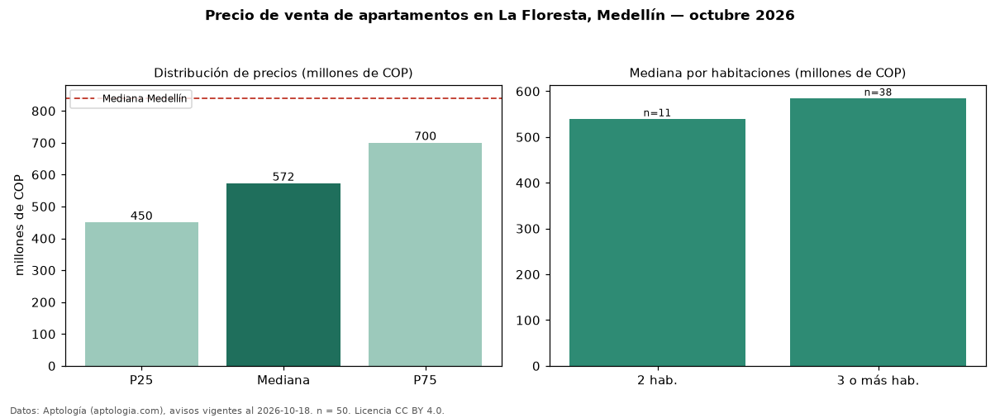

Precio de venta de apartamentos en La Floresta, Medellín — octubre 2026
En La Floresta, Medellín, la mediana de precio de venta de apartamentos es COP 572 millones, según 50 avisos vigentes. Frente a la mediana de Medellín para apartamentos (COP 840 millones), queda 32 % por debajo. Por metro cuadrado, la mediana es COP 6,31 millones/m² (n = 50 avisos con área), 16 % por debajo de Medellín (COP 7,50 millones/m²). Con el precio por m² de arriendo del mismo segmento (COP 35.897/m² al mes), la rentabilidad bruta implícita es 6,8 % anual (aproximación con medianas de ofertas distintas). El área mediana anunciada es 96 m². El segmento con más oferta es el de 3 o más habitaciones (38 avisos, mediana COP 585 millones); pasar de 2 habitaciones a 3 o más habitaciones cambia la mediana +8 %. La administración mediana declarada es COP 244.800 al mes (n = 22). Por precio mediano es el puesto 60 de 80 barrios de Medellín con al menos 30 avisos de apartamentos en venta (COP): en la franja media. Datos: Aptología (aptologia.com), CC BY 4.0 — https://www.aptologia.com/venta/medellin/la-floresta. Archivos: PDF, CSV con las cifras y gráfica PNG.

| Avisos únicos | 50 |
|---|---|
| Percentil 25 | COP 450.000.000 |
| Mediana | COP 572.500.000 |
| Percentil 75 | COP 700.000.000 |
| Mediana por m² | COP 6.308.868 |
Fuente: avisos vigentes de portales inmobiliarios recopilados por Aptología, deduplicados (mínimo 30 avisos únicos por celda). Precios pedidos, no cerrados. Fecha: 2026-10-18.